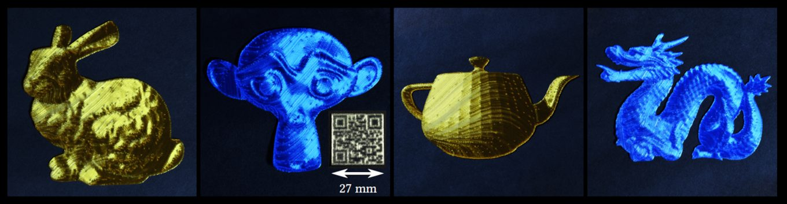
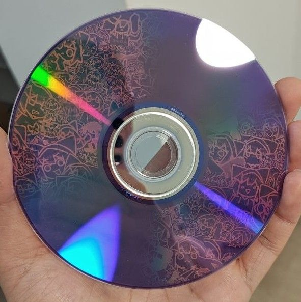

嚴選
我在網路上看到、挑出來的有趣專案。這些都不是我做的，每一項都標明作者並連到原專案。親手玩過之後，我會補上照片或影片、心得和踩到的雷。
-

圖片：Chermain et al. 2023，取自官方程式庫 用一般 3D 印表機印出拉絲金屬光澤 作者 Chermain et al., SIGGRAPH 2023
一個研究方法：用一般的 FDM 3D 印表機和亮面線材，印出像拉絲金屬那樣、轉個角度反光就會移動的表面。原理是擠出線的走向會讓表面在某個方向上比較粗糙，光的反射方向就跟著改變。論文提出一個演算法，用一條連續、封閉的路徑填滿形狀，並讓每一處的線條都朝你指定的方向走。
怎麼用
- 準備輸入：形狀的 SVG 外框，加一張灰階 PNG 表示每一處的線條方向（亮度對應 −90° 到 90°）。可以再加一張 PNG，替每個區域選擇模式：沿著邊界、垂直邊界、最平滑，或照指定方向。
- 用官方程式（Python + JAX，CPU 或 GPU 都能跑）產生路徑，輸出 SVG 和 G-code。作者表示重現論文圖 1 約需 4 分鐘，全部結果約 35 分鐘。
- 用亮面（絲綢或高光澤）PLA 印一層平板。附的 G-code 是針對改裝過的 Creality CR-10S Pro；作者使用 0.9 的擠出倍率，並建議用直接驅動擠出機。
出處
Xavier Chermain, Cédric Zanni, Jonàs Martínez, Pierre-Alexandre Hugron, Sylvain Lefebvre. 2023. Orientable Dense Cyclic Infill for Anisotropic Appearance Fabrication. ACM Transactions on Graphics 42(4), Article 68 (SIGGRAPH 2023). doi:10.1145/3592412
-

圖片：DiscImageStudio 專案 DiscImageStudio 作者 JiaFeiMiao-K-Cat
把圖片轉成光碟資料，燒錄後在 CD、DVD 或單層藍光的盤面上就看得到圖案。
我想玩的光碟本身也是一片繞射光柵。我想用雷射照燒出來的圖案，看它會投影出什麼；再反過來試試，從想看到的影像做傅立葉轉換，設計出要燒的圖案。
怎麼用
- 到 GitHub Releases 下載對應系統的版本：Windows 是 .exe，Linux 和 macOS 是實驗性的命令列版本。
- 新增工程並選 CD、DVD 或藍光，匯入圖片，再調整抖動、伽馬和亮度。
- 匯出 ISO（DVD）、WAV + CUE（CD）或藍光映像，用 ImgBurn 或 cdrecord 燒錄。作者建議先用可以報廢的空白片測試。